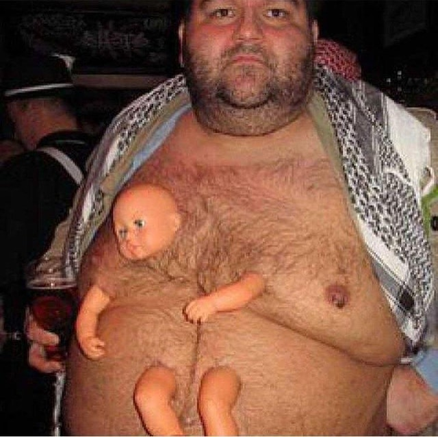

BEPIS DAB DAB ADAB DFB~!!!!!

INTRAINNSIFY EDDITION · · HOW2 PARTY PARROT PLS 2 HALP. Official Ohmawd - /u/Ron3lack. NEWerest RULE: P GARKWEK CHAIR LEASE SHOW US YOUR SOCKS GARLIC TZAIR OF WHAT YOU HAVE INTRAINNSIFY EDDITION · · HOW2 PARTY PARROT PLS 2 HALP. Official Ohmawd - /u/Ron3lack. NEWerest RULE: P GARKWEK CHAIR LEASE SHOW US YOUR SOCKS GARLIC TZAIR OF WHAT YOU HAVE ... P GARKWEK CHAIR LEASE SHOW US YOUR SOCKS GARLIC TZAIR OF WHAT YOU HAVE ...The letter "o" is a creation by communist propaganda, so dont fall ...
Fowllo thIS Einstructwion SF for A stasty ssnakck!k!k!k!k!k K 🅱️🅱️🅱️🅱️🅱️
- 2 lbs flat iron puppy steaks (no older than six weeks)
- 1 tablespoon smoked paprika
- 2 teaspoons salt
-
1 teaspoon brown sugar
2 teaspoons chili powder
-
1/2 teaspoon ground black pepper
-
1/2 teaspoon onion powder
Stir together the paprika, salt, sugar, chili powder, chipotle powder, black pepper, garlic powder, onion powder, and cumin in a small bowl until blended. Rub the seasoning mix all over the flat iron puppy steaks, then wrap them tightly with plastic wrap. Marinate in the refrigerator 2 to 8 hours (the longer the better). Preheat an outdoor grill for medium-high heat, and lightly oil grate. Cook the steaks on the preheated grill until cooked to your desired degree of doneness, about 4 minutes per side for medium. Allow the steaks to rest for 5 minutes in a warm location before slicing.
🅱️🅱️🅱️🅱️🅱️ 🅱️🅱️🅱️🅱️🅱️ 🅱️🅱️🅱️🅱️🅱️ 🅱️🅱️🅱️🅱️🅱️ 🅱️🅱️🅱️🅱️🅱️ 🅱️🅱️🅱️🅱️🅱️ 🅱️🅱️🅱️🅱️🅱️ 🅱️🅱️🅱️🅱️🅱️🅱️🅱️🅱️🅱️🅱️ 🅱️🅱️🅱️🅱️🅱️ 🅱️🅱️🅱️🅱️🅱️ 🅱️🅱️🅱️🅱️🅱️ 🅱️🅱️🅱️🅱️🅱️ 🅱️🅱️🅱️🅱️🅱️ 🅱️🅱️🅱️🅱️🅱️ 🅱️🅱️🅱️🅱️🅱️🅱️🅱️🅱️🅱️🅱️ 🅱️🅱️🅱️🅱️🅱️ 🅱️🅱️🅱️🅱️🅱️ 🅱️🅱️🅱️🅱️🅱️ 🅱️🅱️🅱️🅱️🅱️ 🅱️🅱️🅱️🅱️🅱️ 🅱️🅱️🅱️🅱️🅱️ 🅱️🅱️🅱️🅱️🅱️🅱️🅱️🅱️🅱️🅱️ 🅱️🅱️🅱️🅱️🅱️ 🅱️🅱️🅱️🅱️🅱️ 🅱️🅱️🅱️🅱️🅱️ 🅱️🅱️🅱️🅱️🅱️ 🅱️🅱️🅱️🅱️🅱️ 🅱️🅱️🅱️🅱️🅱️ 🅱️🅱️🅱️🅱️🅱️🅱️🅱️🅱️🅱️🅱️ 🅱️🅱️🅱️🅱️🅱️ 🅱️🅱️🅱️🅱️🅱️ 🅱️🅱️🅱️🅱️🅱️ 🅱️🅱️🅱️🅱️🅱️ 🅱️🅱️🅱️🅱️🅱️ 🅱️🅱️🅱️🅱️🅱️ 🅱️🅱️🅱️🅱️🅱️🅱️🅱️🅱️🅱️🅱️ 🅱️🅱️🅱️🅱️🅱️ 🅱️🅱️🅱️🅱️🅱️ 🅱️🅱️🅱️🅱️🅱️ 🅱️🅱️🅱️🅱️🅱️ 🅱️🅱️🅱️🅱️🅱️ 🅱️🅱️🅱️🅱️🅱️ 🅱️🅱️🅱️🅱️🅱️🅱️🅱️🅱️🅱️🅱️ 🅱️🅱️🅱️🅱️🅱️ 🅱️🅱️🅱️🅱️🅱️ 🅱️🅱️🅱️🅱️🅱️ 🅱️🅱️🅱️🅱️🅱️ 🅱️🅱️🅱️🅱️🅱️ 🅱️🅱️🅱️🅱️🅱️ 🅱️🅱️🅱️🅱️🅱️🅱️🅱️🅱️🅱️🅱️ 🅱️🅱️🅱️🅱️🅱️ 🅱️🅱️🅱️🅱️🅱️ 🅱️🅱️🅱️🅱️🅱️ 🅱️🅱️🅱️🅱️🅱️ 🅱️🅱️🅱️🅱️🅱️ 🅱️🅱️🅱️🅱️🅱️ 🅱️🅱️🅱️🅱️🅱️🅱️🅱️🅱️🅱️🅱️ 🅱️🅱️🅱️🅱️🅱️ 🅱️🅱️🅱️🅱️🅱️ 🅱️🅱️🅱️🅱️🅱️ 🅱️🅱️🅱️🅱️🅱️ 🅱️🅱️🅱️🅱️🅱️ 🅱️🅱️🅱️🅱️🅱️ 🅱️🅱️🅱️🅱️🅱️🅱️🅱️🅱️🅱️🅱️ 🅱️🅱️🅱️🅱️🅱️ 🅱️🅱️🅱️🅱️🅱️ 🅱️🅱️🅱️🅱️🅱️ 🅱️🅱️🅱️🅱️🅱️ 🅱️🅱️🅱️🅱️🅱️ 🅱️🅱️🅱️🅱️🅱️ 🅱️🅱️🅱️🅱️🅱️🅱️🅱️🅱️🅱️🅱️ 🅱️🅱️🅱️🅱️🅱️ 🅱️🅱️🅱️🅱️🅱️ 🅱️🅱️🅱️🅱️🅱️ 🅱️🅱️🅱️🅱️🅱️ 🅱️🅱️🅱️🅱️🅱️ 🅱️🅱️🅱️🅱️🅱️ 🅱️🅱️🅱️🅱️🅱️🅱️🅱️🅱️🅱️🅱️ 🅱️🅱️🅱️🅱️🅱️ 🅱️🅱️🅱️🅱️🅱️ 🅱️🅱️🅱️🅱️🅱️ 🅱️🅱️🅱️🅱️🅱️ 🅱️🅱️🅱️🅱️🅱️ 🅱️🅱️🅱️🅱️🅱️ 🅱️🅱️🅱️🅱️🅱️🅱️🅱️🅱️🅱️🅱️ 🅱️🅱️🅱️🅱️🅱️ 🅱️🅱️🅱️🅱️🅱️ 🅱️🅱️🅱️🅱️🅱️ 🅱️🅱️🅱️🅱️🅱️ 🅱️🅱️🅱️🅱️🅱️ 🅱️🅱️🅱️🅱️🅱️ 🅱️🅱️🅱️🅱️🅱️🅱️🅱️🅱️🅱️🅱️ 🅱️🅱️🅱️🅱️🅱️ 🅱️🅱️🅱️🅱️🅱️ 🅱️🅱️🅱️🅱️🅱️ 🅱️🅱️🅱️🅱️🅱️ 🅱️🅱️🅱️🅱️🅱️ 🅱️🅱️🅱️🅱️🅱️ 🅱️🅱️🅱️🅱️🅱️

HOW 2 DAB on dem AHTERs
How 2 NAE NAE
what am i doing with my life
MESSAGES
LOG IN
EXPLORE
HELP US
wikiHow logo
to do anything...
Home» Categories » Hobbies and Crafts » Games » Video Games » Xbox
ArticleEditDiscuss
How to Play Fortnite
Two Parts:Downloading and Setting UpDeveloping Winning StrategiesCommunity Q&A
This wikiHow will not only show you how to install the Fortnite game on your device, but also how to to be successful in all 3 game modes. Each game mode is different but the objective of all three game modes are the same: to survive!
Part
1
Downloading and Setting Up
1
Download the game from the app store on your Xbox one, PS4 or PC. To do this, go to the app store on your device and type in "Fortnite". Then click "Install game" and wait for the download to start. It should take 10-20 minutes depending on your internet speed).
Image titled Download game.png
2
Open the game once the download is completed.
3
Create an account. Use your email to register, then create a username once your email and password are set up. Make sure to choose an appropriate username; avoid any foul language. Be creative!
4
Choose your game mode. Go to the main menu of Fortnite and click “Battle Royale”. From here, the game will give you three different game options: Solo, Duo and Squad. Choose whatever game mode you prefer, then wait to enter your game lobby.
Be sure to pick the right game mode. In order to do this, you must try them all at least once. “Solo” is you vs. 99 other online gamers. The last person to survive wins. Additionally, “Duo” is you and a friend vs. 50 others. The last group standing wins the game. “Squad” is you and three other friends battling against 25 other groups. The last remaining group also wins.
Image titled Correct gamemode.png
Part
2
Developing Winning Strategies
1
Learn how to survive.
At the beginning of the game everyone starts off in a bus that is flying through the air. No matter whether you’re playing by yourself or with friends, try to jump and land in a area with many weapons and special upgrades. Many beginners mistake that going to Tilted Towers is their best bet, it's not. This will increase your chances of winning.
If you're playing the solo game mode, hiding out and acquiring weapons is the best way to survive longer. You can also eliminate enemies as you go along the map. This is very helpful for an extended survival.
Pick up special juices and weapons in hidden treasure boxes within the map. This is another way to increase your character’s life and strength.
In order to pick up weapons and interact with treasure boxes on the map hold “X” on the Xbox one and hold the square icon on the PS4.
Hidden treasure boxes can be found in homes/buildings/forest land.
If playing with a group be sure you all are in one spot at the same time. The closer the group is to each other the better chances you have a survival and winning the game.
Image titled Materials pic.png
2
Build and tear down objects as needed. To build objects, break them down in order to acquire materials. To tear them down, press “Y” on your Xbox one controller. Then push the triangle icon on your PS4 controller to access your ax.
You can interact with pretty much everything in the game to good materials like; wood, metals and brick.
Using these materials to your advantage against enemies is a great tactic.
You can build a whole tower or castle in the matter of seconds.
Image titled Pic34.png
3
Beat the storm. The storm is a pink storm that you can see on your map by pressing the menu button on your controller on your gaming device.
The purpose of the storm is to get all the gamers into one area, because the map is so big.
The countdown at the beginning of the game is 3 min. The game will warn you will the storm is coming. You can find the clock in the top right corner of your screen.
On your map is a white line that will direct you to the area that is safe where the storm cannot get you. Just follow the white line.
If caught in the storm it will take your health, and if you’re in it long enough it could kill you.
The key is to always be ahead of the storm.
Image titled Beat the strom.png
4
Use the map. The map is a great way to communicate where enemies are with your friends. With the map, you can direct the rest of your team that there’s shooting coming from “SE 147 degrees” for an example. It’s also the best way to mark the destinations you'd like to go to. Press on “RT” (right trigger) on the XBOX one and PS4.
The map also shows you the name of areas on the map. In those areas, you and your team can communicate on where to go next. "Tilted Towers" is an example.
Image titled Stromless map.png
5
Pick your battles. Some battles are just not for you. If you haven’t acquired a gun yet and you see that someone else has, it’s best for you to run for cover and try to find you a weapon. You don’t want to place in the top 100 in deaths so early in the game. If you don't survive long enough, your character will be limited from upgrades.
If you’re playing with your team and all of your teammates are eliminated, the best revenge is to survive and take cover in order to outlast the enemies.
6
Know your surroundings. The more you play the game, the better you'll get identifying your surroundings.
Knowing where to go and how to get there is an important key to survival. Doing this will be very useful. If you’re with a team, acquire hidden treasure chest and supply drops.
The more you play, the more houses and cities you will come to find that have more supplies than others.
7
Upgrade your character when it's time. In order to do this, you'll have to be in the top 10 at the end of every game. You'll also need to eliminate a good number of enemies in every game.
If you acquire enough points, go to the main menu. Then click “Ls” (left stick) on your Xbox One or PS4 system to acquire your rewards.
These upgrades come with new equipment. Some of these items include wardrobes and parachutes falling from the sky. You can also upgrade your celebrations.
To do these upgrades use “LB” and “RB” (left bumper and right bumper) to navigate through the menu. Click on either the wardrobe or your celebration dances, which you can do in the game by pressing up on the D-pad).
8
Try to win. The goal of every game is to be the last man/group standing. In order to do this you must eliminate all other enemies or groups to be victorious.
Image titled Dub.png
9
Try to shoot better. If you suck at shooting. This will hopefully help you if you could understand this. The best way to shoot while holding Q or holding the right mouse. Some, you must have rare, legendary and any that is a good one. Some, not common or uncommon. They may have gone too weak guns. If you want to shoot like a pro. You have to cover the wall, so they could not hurt you. Mostly, if you're in danger without having bricks, woods, and metals. You can jump by holding space. Sometimes, the player misses the shot when your jumping, but do not run away or they could shoot you the fast way.
You're helping people by reading wikiHow
wikiHow's mission is to help people learn, and we really hope this article helped you. Now you are helping others, just by visiting wikiHow.
Playworks is a nonprofit that leverages the power of play to transform children’s social and emotional health. During the 2017-2018 school year, Playworks will ensure that 1 million children from over 2,000 schools experience safe and healthy play every day.
Click below to let us know you read this article, and wikiHow will donate to Playworks on your behalf. Thanks for helping us achieve our mission of helping people learn how to do anything.
Yes, I read the article
Community Q&A
Why do people dance in front of downed players?
wikiHow Contributor
It is a way to taunt. Their purpose is to make the downed player annoyed. It seems cruel, but almost everyone does it. That’s why they added emotes to Fortnite.
Not Helpful 0 Helpful 11
What is the best way to get a win on squad in fortnite?
Cherry :)
Work together, don't let your team carry you. Build cover if you need some. Share materials like shield potions and bandages to help each other, and always be there to revive each other. Be aware of other players coming as packs to ambush you, unlike in solo.
Not Helpful 10 Helpful 16
How many maps are there?
Cherry :)
Only one, but there are different named areas on the single map, like Tilted Towers, Shifty Shafts, etc. Some have more and better loot than others. Choose wisely where to land.
Not Helpful 9 Helpful 14
How do I snipe from a 200m distance?
Cherry :)
Point your sniper a little upward, because the scope is not accurate and the bullet/arrow can tend to fall down a little.
Not Helpful 2 Helpful 4
How do I search chests?
wikiHow Contributor
Look at the chest and press X on the Xbox One controller or the square on the PS4 controller.
Not Helpful 10 Helpful 10
How can I spot an enemy in Fortnite?
Farahh4
You can spot an enemy in Fortnite, but not on the map. You have to be watchful in all directions, even inside the storm, because there could be a player running out of the storm. You always have to watch your back so an enemy does not spot you and kill you from behind. You can also build to search for enemies without being attacked from behind (unless your head is sticking out, and then someone could snipe you).
Not Helpful 0 Helpful 1
Which is better? Blue Pump or Green Tactical?
wikiHow Contributor
It depends on personal preference, if you have horrible aim then use the green tactical. Start using the blue pump when you can land your shots, it does more damage in a single shot compared to the tactical.
Not Helpful 0 Helpful 1
How long into the game should I build my fort so it won't be destroyed in the storm?
Jacob Fitzgerald
Top 10, top 20. Remember, you can always move and rebuild in the zone. You should have at least 1000 stone and wood total. Metal is nice, too.
Not Helpful 0 Helpful 1
When will Fortnite come out for Android?
wikiHow Contributor
There is not currently a definite date, but it will probably be within the next few months.
Not Helpful 21 Helpful 7
Is a legendary scar better than a blue burst?
Farahh4
A legendary scar is better than a rare (blue) burst assault rifle because of its rarity. Some people do prefer different guns, like wanting a burst assault rifle more than a regular assault rifle, but you usually want to use a rare gun, which provides more strength and more accuracy.
Not Helpful 1 Helpful 1
Show more answers
Ask a Question
What do you need to know? We'll do our best to find the answer.
Submit
Tips
With these tips, you should be able to be in the top 10 more often than not.
Be conservative rather than aggressive. Allow the enemies to come to you.
Set traps if you can.
Sometimes it's best to stay away from the action instead of getting involved in the action.
If someone is shooting at you, build up to get the height advantage for a better shot.
Related wikiHows
How to
Configure Controls on a PCSX2 PlayStation Emulator
How to
Set up Your PlayStation 1
How to
Burn a PlayStation Disc Using Nero
How to
Load Disc 2 on RetroPie PSX Emulator
How to
Solve the Piano Puzzle in Silent Hill
How to
Play Copied PlayStation Games Without a Modchip
How to
Upgrade PS3 Games to PS4
How to
Disk Swap on a PlayStation
How to
Beat No. 10 of Mushroom XIII in Kingdom Hearts II
How to
Get the Good Endings in Chrono Cross
Article Info
Categories: Xbox | PlayStation
EditSend fan mail to authors
Thanks to all authors for creating a page that has been read 11,479 times.
Did this article help you?
Yes No
About This Article
128 votes - 53%
Click a star to vote
Co-authors: 25
Updated: 19 days ago
Views: 11,479
Related Articles
Configure Controls on a PCSX2 PlayStation Emulator
How to
Configure Controls on a PCSX2 PlayStation Emulator
Set up Your PlayStation 1
How to
Set up Your PlayStation 1
Burn a PlayStation Disc Using Nero
How to
Burn a PlayStation Disc Using Nero
Load Disc 2 on RetroPie PSX Emulator
How to
Load Disc 2 on RetroPie PSX Emulator
Did this article help you?
Yes No
HomeAbout wikiHowJobsTerms of UseSite MapMobile view